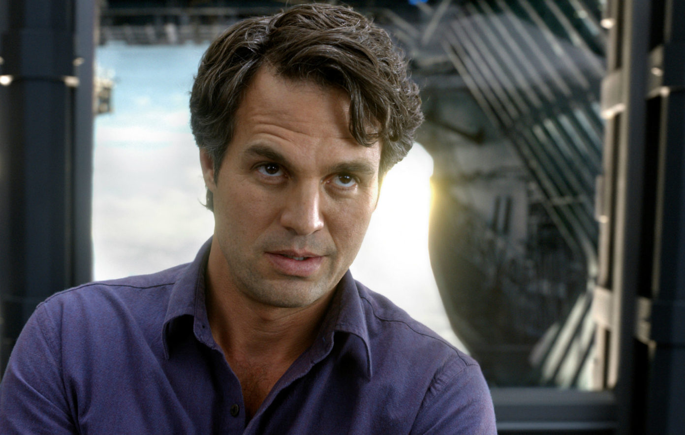
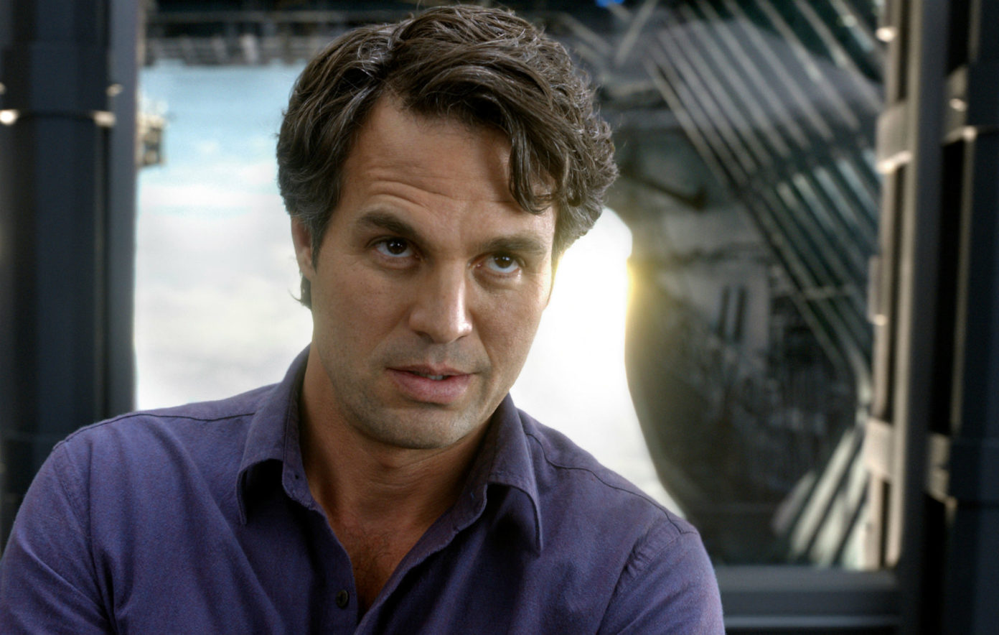

Marvel's The Avengers is a 2012 American superhero film based on the Marvel Comics superhero team of the same name. Produced by Marvel Studios and distributed by Walt Disney Studios Motion Pictures, it is the sixth film in the Marvel Cinematic Universe (MCU).
Written and directed by Joss Whedon, the film features an ensemble cast including Robert Downey Jr.,
Chris Evans, Mark Ruffalo, Chris Hemsworth, Scarlett Johansson, and Jeremy Renner as the Avengers, alongside Tom Hiddleston, Stellan Skarsgård, and Samuel L. Jackson.
In the film, Nick Fury and the spy agency S.H.I.E.L.D. recruit Tony Stark, Steve Rogers, Bruce Banner, Thor, Natasha Romanoff, and Clint Barton to form a team capable of stopping Thor's brother Loki from subjugating Earth.


 
